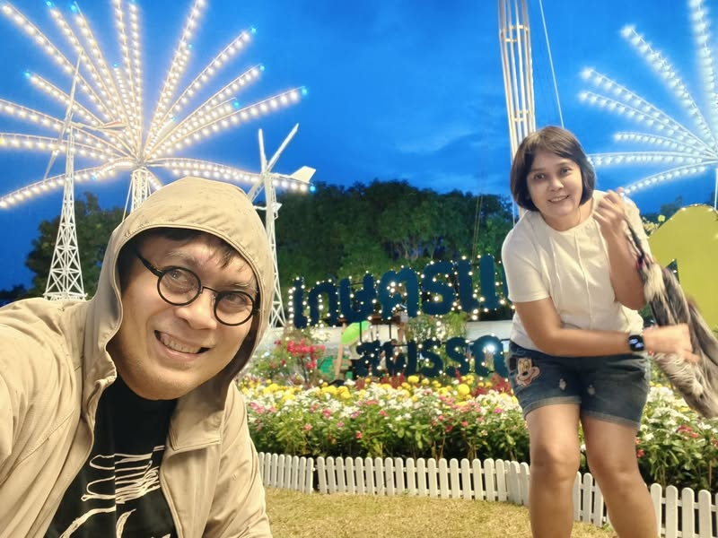

Archive
เกษตรแฟร์ สุพรรณบุรี ในวันที่ฝนตก
บันทึกสั้น ๆ จากการมาเที่ยวเกษตรแฟร์ สุพรรณบุรี กับความเห็นใจคนจัด คนขาย และคนซื้อ เมื่อสองวันสุดท้ายของงานมีฝนตกตั้งแต่บ่ายจนค่ำ
personal-noteskasetsart-universitysuphan-burikaset-fair
Rewritten Post
เกษตรแฟร์ สุพรรณบุรี ในวันที่ฝนตก


มาเที่ยว เกษตรแฟร์ สุพรรณบุรี ที่มหาวิทยาลัยเกษตรศาสตร์ วิทยาเขตสุพรรณบุรีครับ สองวันสุดท้ายของงาน ฝนตกตั้งแต่บ่ายจนค่ำ
เห็นใจทั้ง คนจัด คนขาย และคนซื้อ เลยครับ
Original
Original Facebook Post
มาเที่ยวเกษตรแฟร์ สุพรรณบุรี เห็นใจคนจัด คนขาย คนซื้อ ในทั้งบ้านเลย สองวันสุดท้าย ฝนตกทั้งบ่ายยันค่ำ
บทความอื่นที่เกี่ยวข้อง